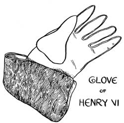
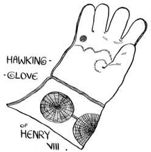
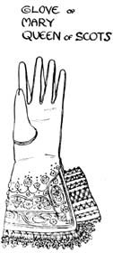
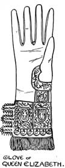
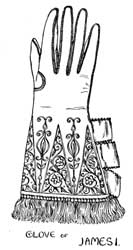

Florence Mary Gardiner, Evolution of Fashion. Davis, ed. from the 1897 edition. [eng]. Cited by chapter/paragraph.
Passages iii.1-iii.23
urn:cts:fuTexts:gardiner.eof.davis:iii.1-iii.23
iii.1CHAPTER III.
iii.2GLOVES.
iii.3"Gloves as sweet as damask roses."--_Shakespeare._
iii.4"See how she leans her cheek upon her hand. O, that I were a glove upon that hand, That I might touch that cheek."
iii.5--_Romeo and Juliet._
iii.6The glove as an article of dress is of great antiquity, and among the fossils of the cave-dwellers of pre-historic times, which have been recently discovered in France, Belgium, and Switzerland, there is ample proof of its existence. Probably the first gloves were formed of skins, sewn with bone needles, and were long enough to reach above the elbow.

iii.8Xenophon, speaking of the Persians, gives as an instance of their effeminacy "that they not only covered their head and feet, but guarded their hands from cold by thick gloves." Homer, describing Laertes at work in his garden, represents him with gloves on his hands to protect them from thorns. Pliny the younger, in speaking of his uncle's visit to Vesuvius, states that his secretary sat by ready to write down anything that was remarkable, and had gloves on his hands that the coldness of the weather need not impede his work. Varro, an ancient writer says:--"Olives gathered with the naked hand are preferable to those plucked in gloves;" and Atheneus speaks of a glutton who wore gloves at table so that he might handle the meat while hot and devour more than the others present.
iii.9That the Anglo-Saxons wore gloves we gather from their being mentioned in an old romance of the seventh century known as the "Poem of Beowulf," and according to the laws of Ethelred the Unready, five pairs of gloves formed part of the duty paid to that Prince by certain German merchants. In Planche's "History of British Costume," an Anglo-Saxon lady appears to be wearing a glove with a separate division for the thumb but without fingers, and exactly resembling an infant's glove of the present day. In 1462 Edward IV. forbade the importation of foreign gloves to England, a law which remained in force till 1826.

iii.11In the early Christian Church gloves played an important part. In A.D. 790 Charlemagne granted an unlimited right of hunting to the Abbot and monks of Sithin, so that the skins of the deer they killed could be used in the manufacture of gloves, girdles, and covers of books. In some cases it was commanded that the clergy should wear gloves in administering the Sacrament, and a writer in the "Antiquary" states:--"It was always looked upon as decorous for the laity to take off their gloves in church where ecclesiastics alone might wear them. It was perhaps regarded as a proof of clean hands, for to this day persons sworn in our law courts are compelled to remove their gloves." In the ancient Consecration Service for the Bishops of the Church, a blessing was invoked on the gloves they wore. Those of William of Wykeham preserved at New College, Oxford, are adorned with the sacred monogram in red silk, and ecclesiastical gloves were often lavishly decorated with embroidery and jewels, and were bequeathed by will with other valuables.

iii.13Formerly judges were forbidden to wear gloves when engaged in their official duties, but are no longer bound by this restriction, and receive as a memorial of a maiden assize (that is, when there are no prisoners to be tried) a pair of white kid gloves from the sheriff, and during the time fairs were held their duration was marked by hanging a glove outside the town hall. As long as it remained there all persons in the place were exempt from arrest, but directly it was removed it was the signal for closing the fair, and the privilege was at an end.
iii.14Throwing down a glove was regarded as a challenge to combat, and this curious old custom is still retained in the English coronation ceremony. Kings were also invested with authority by the delivery of a glove. As _un gage d'amour_ it has for centuries been esteemed, and in the days of chivalry it was usual for knights to wear their ladies' gloves in their helmets, as a talisman of success in arms. In old records we also meet with the term "glove money," a sum paid to servants with which they were to provide this portion of their livery, and till quite recently it was the custom to present those who attended weddings and funerals with gloves as a souvenir.
iii.15Shakespeare often mentions gloves, and some assert that he was the son of a glover. A pair which belonged to the dramatist is still preserved. They are of brown leather, ornamented with a stamped pattern, and are edged with gold fringe. They were presented by the actor Garrick to the Mayor and Corporation of Stratford-on-Avon at the Shakespearian commemoration in 1789.

iii.17Many royal gloves have found a place in private collections. Henry VI.'s glove has a gauntlet, is made of tanned leather, and is lined with deer-skin, and the hawking glove of Henry VIII. is another interesting relic of a bygone age. The King kept his hawks at Charing Cross, and in the inventories taken after this monarch's death we read of "three payre of hawkes' gloves, with two lined with velvet;" and again at Hampton Court there were "seven hawkes' gloves embroidered." The hawking glove, of which an illustration is given, may be seen in the Ashmolean Museum. It is of a simple character, evidently intended for use rather than ornament.
iii.18Gloves were not generally worn by women till after the Reformation; but during the sixteenth and seventeenth centuries their use gradually extended to the middle classes. Queen Elizabeth's glove may be seen at the Bodleian Library, Oxford, and is believed to have been worn at the visit of the Virgin Queen to the University in 1566. It is fringed with gold, and is nearly half a yard in length; it is made of white leather worked with gold thread, and the cuff is lined with drab silk. Mary Queen of Scots' glove in the Saffron Walden Museum is of light buff leather, wrought with silver wire and silk of different colours. It is lined with crimson satin, edged with gold lace enriched with sequins, and the opening is connected with bands of satin finished with lace insertion. This glove was presented on the morning of her execution to a member of the Dayrell family, who was in attendance at Fotheringay Castle. In happier days Queen Mary gave an exquisitely embroidered pair of gloves, with a design in which angels' heads and flowers appear--her own work--to her husband, Lord Darnley; and the gloves generally of the Tudor period were more ornate than those which adorn beauty's hands on the eve of the nineteenth century, and were, in most cases, wrought with the needle.
iii.19Though the history of gloves savours of romance, there is every reason to believe that they have sometimes been used with sinister motives, as a large trade was done at one time in poisoned gloves, delicately perfumed, to conceal their deadly purpose.

iii.21Some gloves which were the property of James I. are of brown leather lined with white, and the seams are sewn with silk and gold thread. The embroidery is in gold and silver thread on crimson satin, with a lining of red silk. They are finished with gold fringe, and have three loops at the side. A glove of chaste design, worn by Charles I. on the scaffold is made of cream-coloured kid, the gauntlet embroidered with silver and edged with silver fringe. Queen Anne, on the other hand, wore highly-decorated gloves of Suede kid, with raised silken flowers on the gauntlet, and three loops of rose-coloured ribbon, to allow them to be slipped over the hands. They are further enriched with gold lace and embroidery. A yellow Suede Court glove of George IV. gives the impression that the first gentleman of Europe had a fist of tremendous proportions. Her Majesty Queen Victoria generally wears black kid gloves, except for Court functions, when white glace kid gloves are invariably used.
iii.22Her Royal Highness the Princess of Wales has a delicately-formed hand with tapering fingers, and her size is six and a-half. Her Royal Highness adapts her gloves to the occasion and toilette, and is always _bien gante_.
iii.23The first Napoleon gave an impetus to this branch of industry by insisting on gentlemen wearing gloves on State occasions and at festive gatherings, and the fashion spread through the countries of Europe with astonishing rapidity.